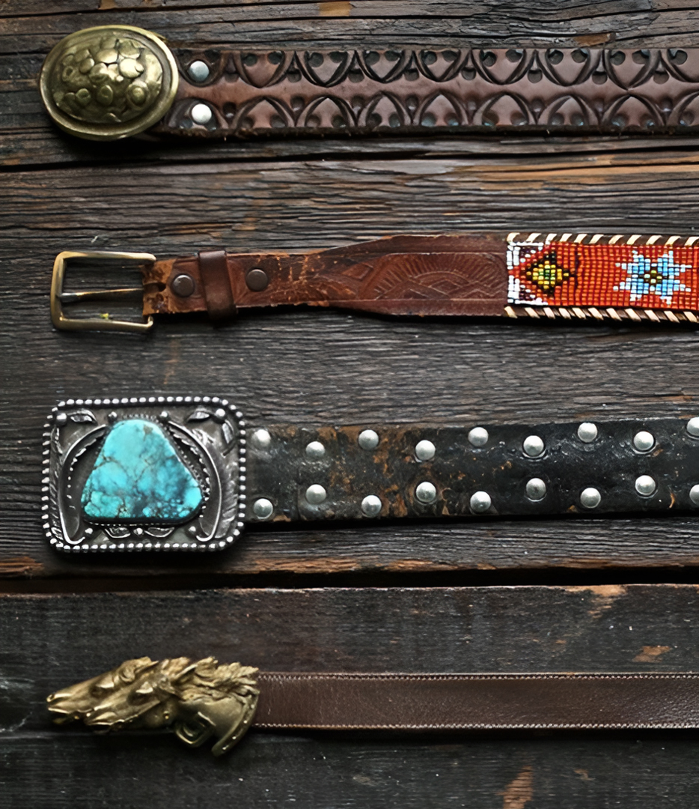
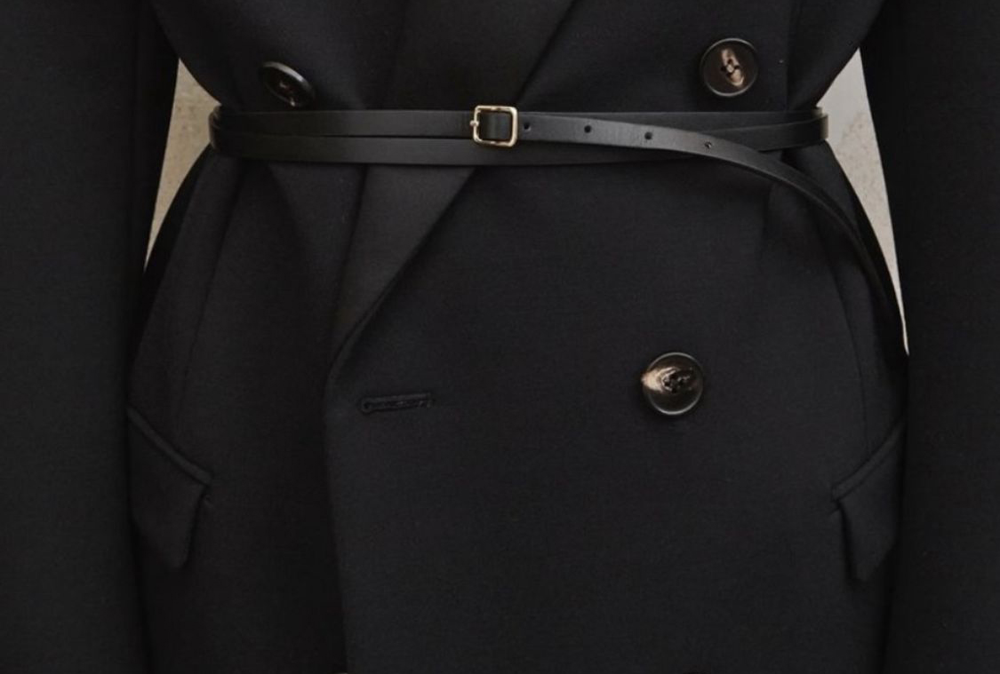
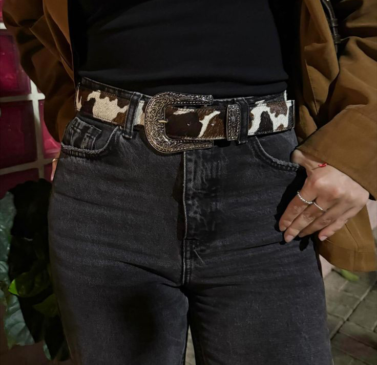
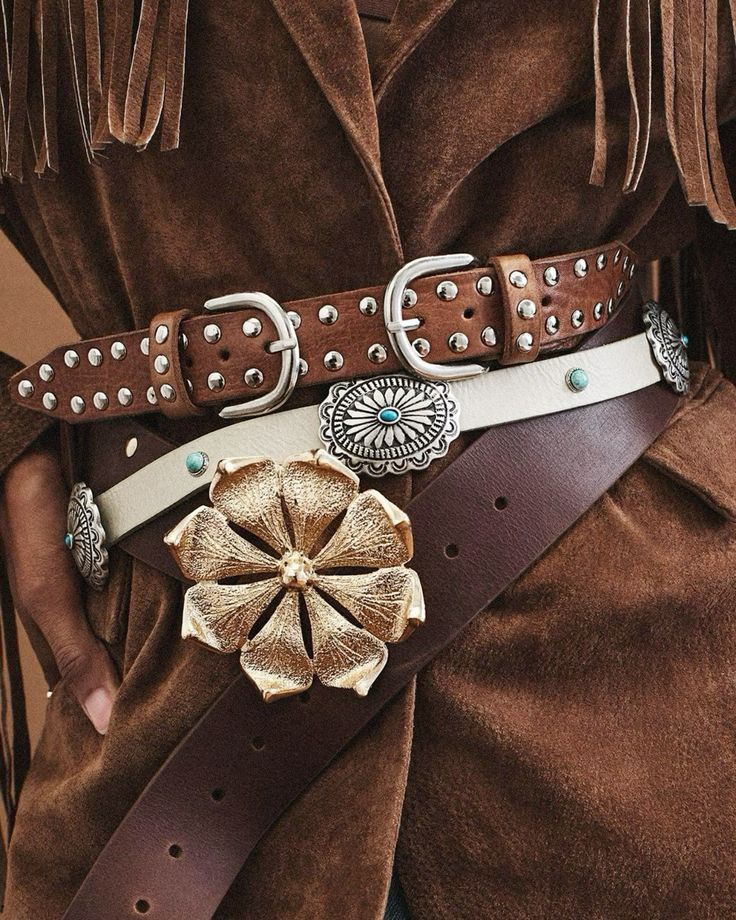
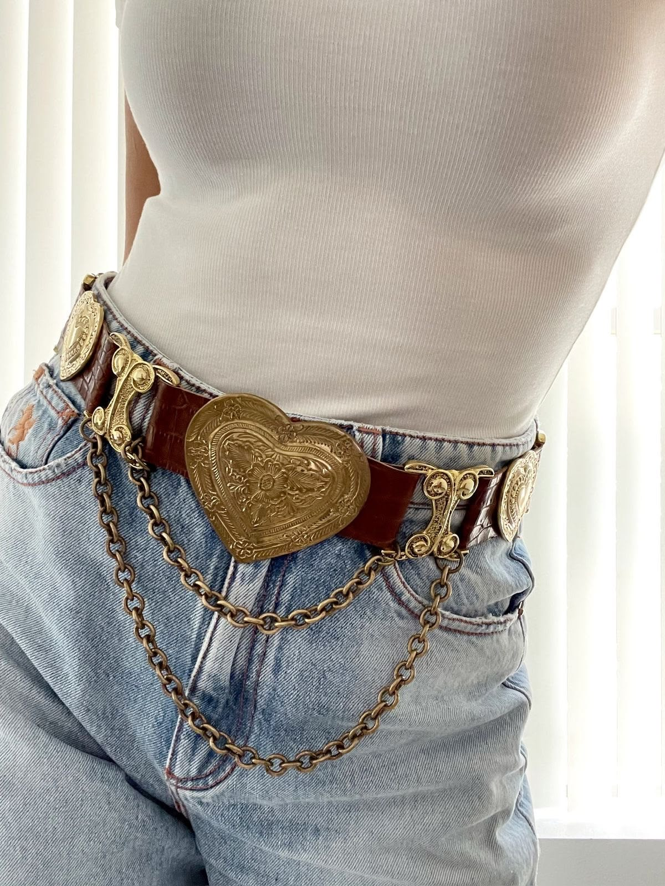
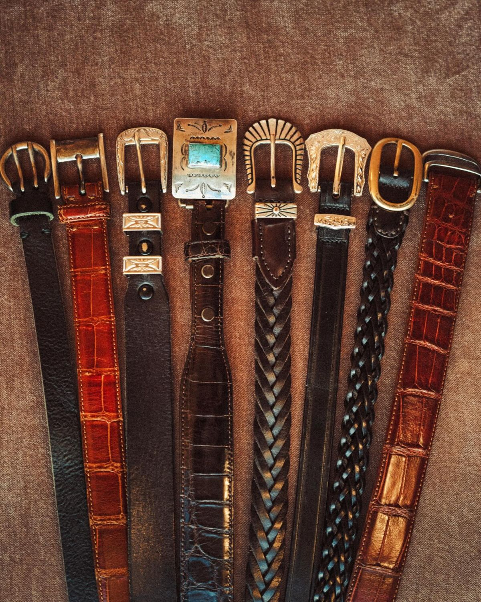

Ремень как главный акцент
Винтажный ремень способен полностью изменить настроение образа. Он может подчеркнуть талию, добавить графичности силуэту или стать тем самым акцентом, который собирает весь образ воедино.

Винтажный ремень способен полностью изменить настроение образа. Он может подчеркнуть талию, добавить графичности силуэту или стать тем самым акцентом, который собирает весь образ воедино.

Тонкие ремни особенно хорошо работают с платьями, тренчами и объемными жакетами. Они создают более вытянутый силуэт и добавляют образу винтажную элегантность.

Более массивные модели идеально сочетаются с джинсами, рубашками и однотонным трикотажем. Такой ремень добавляет характер даже самому минималистичному образу.

Потёртая кожа, винтажная фурнитура, необычные пряжки и ручная обработка — именно детали делают аксессуар уникальным.

Винтажные ремни легко интегрируются в современный гардероб. Они помогают сочетать минимализм настоящего с эстетикой прошлых десятилетий.

Каждый винтажный ремень хранит следы времени — и именно это делает его особенным. Такие вещи невозможно повторить, потому что их характер формировался годами.
